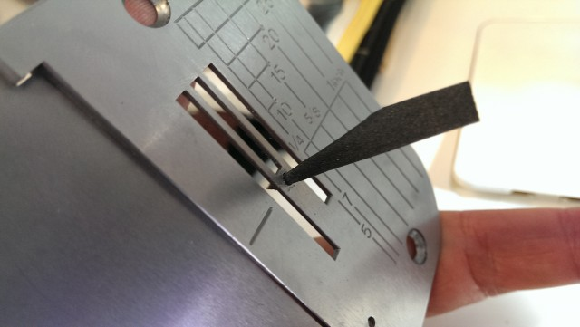
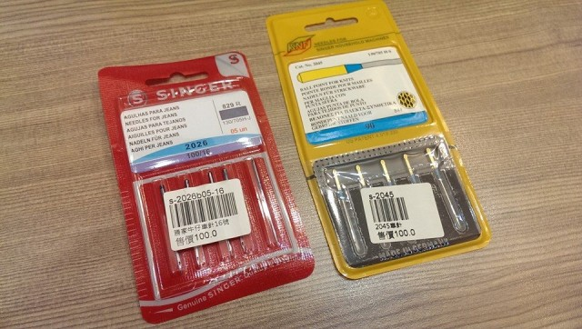
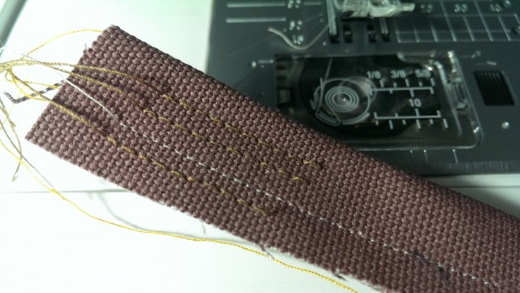
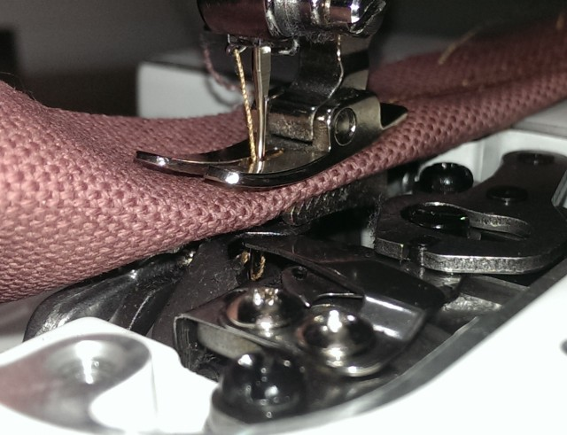

最近我的幾部縫紉機都陸續出現跳針的問題，正在想辦法解決中，也順便好好弄懂縫紉機的原理！
如果你的裁縫車有(一針變兩針三針，就是針距變大)的問題，那就是跳針了，跳針很擾人的地方是它可能不定時出現，常常在你好不容易車完一圈後，才驚覺中間掉了一二針，如果你也有完美主義的話，那就只有拆掉重車的命運，但…事情往往不是這麼簡單就能解決掉，當它接二連三的給你跳個針，就會很想翻車！
先了解縫紉機的原理
原來是這樣，在車針下來時，下方的大釜尖尾會往車針的凹陷處，精準的把上線勾下來，看似簡單的過程，其實很不簡單耶。所以跳針就是下方的大釜沒有在車針下來時，可能有各種原因，導至沒有勾住上線，才導至跳針，到底是什麼原因讓它勾不住呢 ?
後來，我花了一些時間上網找資料，也問了原廠的師傅，我把大部份跳針可能的原因整理起來，建議先從這裡著手，如果剛好能解決你的問題，那就恭喜你嘍。
基本跳針問題排除
- 車針歪掉，換新針試看看。
- 車針用久鈍了，換新針試看看。
- 車針上有膠，把車針弄乾淨或換新針試看看。
- 車厚布時，換大號一點的車針 (試試16號)。
- 車彈性布時，換彈性針。
- 上下布的厚簿度差太多時，在下面墊報紙車
- 較稀疏或特別簿的布時，在下面墊報紙車
- 車針穿線穿錯邊，那就換成正確的那邊嘍
上面這些我都先試過了，但跳針還是繼續的出現，當然，直接送去原廠請師傅幫忙調整也是一個好方法，但本著研究精神，且不想一出問題就要送廠，於是我繼續的尋求解決方法。
檢查針版上的針孔是否有受損
上回我的Juki 2010Q有發生這個問題時，原廠的師傅說我的針版有受損，所以幫我把針孔磨一磨，情況就有改善，這次我也試著自己拿砂紙磨一磨，結果的確有變好一些，但跳針不是改善就好啦，跳一格都不行呀，所以問題還是沒完全解決。

裁縫車使用一陣子後，可能會有針板受損的問題，可以用磨砂紙把針板上被針戳的凹凸不平的洞口磨一磨，就會改善囉。當然，如果太嚴重，也能換針板，不用換車啦。
厚布時換粗線
目前我的Juki 2010Q在車厚布時(約4層八號帆布)，就會不定時的跳針，車1~2層時不太會有問題，我換過16號的車針，但情況並沒有改善，於是我換了較粗的車線，嘗試配上16號車線，結果大好，就沒有跳針問題了。

16號牛仔針(左) & 西德製針織車針(右)

調整上線張力
聽店家說如果遇到彈性布、尼龍布時，可嘗試用所謂彈性針(上圖右)來試試，於是我換上彈性針來車縫尼龍布，我這個尼龍布是比較硬挺的，結果跳針變的相當嚴重，雖然沒有解決問題，但可以確定的是車針對於跳針是有很大影響的。
於是我用先前理解的縫紉機原理去思考，我嘗試把上線張力調小後再試，跳針問題居然就立即消失了，所以上線的張力也不能太緊，太緊的話把線都拉直了，下面的大釜沒有更大的角度可以掛住線。
一點心得
車針下去到最底時，線是拉緊的，接下來針會開始往上走一些些，此時車線會開始放鬆，而自然型成一個小圈圈，讓下方的大釜尖尾可以順利的勾住上線，跳針大概就是車線沒有形成讓大釜好勾的漂亮小圈圈形狀，遇到問題時多往這方向去嘗試找可能的原因來排除。
另外，我覺得車線的品質應該也有很大的影響，車線夠順夠Q挺，應該會比較容易形成漂亮的小圈圈，這方向我還會再嘗試看看。

弄了好久，把針版整個拆了才看到上線準備被勾前的樣子，有沒有看到，它其實會是鬆鬆的小圈圈喔
這個影片可以很清楚的看到整個過程
日常保養
家用型的縫紉機，在車厚布時，請盡量不要車太快，也不要用力的拉扯或硬推布，以免車針容易歪掉受損，較不易斷針，針版也比較不會受損，平常的使用習慣很重要，若習慣性的使用不當，車子很容易有毛病。
還有日常的保養很重要，打開針板，可以用棉花棒把棉絮清一清，然後上點針車油，一兩滴就好。常使用要常清，不常使用也要偶爾拿出來點針車油才不會生鏽，但記得點完針車油不要馬上車，免得油漬沾在布上，可先用不要的布車縫過再正式車縫。
現在跟Amy購買縫紉機，除了可享價格優惠外，還會再贈送Niizo折價券(可使用於手作課程或材料包)。
> 看各機型價格及贈品
暫不訂購！可填表單留email，將主動通知團購訊息
https://forms.gle/eJ5ErjTgP6EjFdWY8
我們每年會開兩次縫紉機團購，通常會在每年的三月及十月份左右，如果暫不急著訂購的話，可先填寫表單，留下正確的email，有開新的團購會主動通知您喔!

{kind=link}
{kind=link}
{kind=link}
{kind=link}
{kind=link}
2017/07/27 at 8:41 上午
最近在老家搬一台50年的縫紉機，經過稍微整理保養還可以轉動，買些針線安裝上去，怎麼就是無法使用，好像就是大釜沒有鉤住上針下來的線，針下去再上來線又跟上來，想請問前輩先進要如何解決，是否機構有問題，還是調整問題
2017/08/23 at 9:56 下午
明煙您好～下線有裝好嗎？如果確定都有裝好，那可能還是要送修保養比較好喔。
2017/04/14 at 1:13 上午
想請問車線的話會比較推薦哪個牌子的車線，
2017/05/03 at 8:52 下午
我是用台灣的一般車線，金線標，給您參考囉～
2017/03/22 at 10:52 下午
跳針通常我檢查線是否太緊
機針看是幾番 如果車很厚的布 建議用14~16
然後看看針有沒有歪掉
建議先換一隻針在來調線圈勾線位置,如果針柱太下面的話
也會線圈太大導致跳針唷線會不穩定,如果布是軟的 針版的針孔要換小一點的
不然針下去布會被你的針壓下去也會導致跳針,跳針很多原因,..這只是其中的一些原因
學修裁縫車學2年左右 跟老師傅學@@
2017/05/03 at 8:56 下午
非常感謝您的分享喔，挑針原因真的很多很多…..
2017/01/11 at 3:24 下午
一直斷線該怎麼辦?
2017/01/13 at 11:51 下午
您好，斷線的原因很多，可以先檢查是否穿線正確，下線位置是否擺放正確，梭殼槽要清潔並上油，若都還是一樣，可能要回廠保養一下囉。
2016/05/26 at 10:15 上午
請問老師16號針都是配什麼牌子型號的線^^
2016/06/01 at 10:57 上午
我都是用一般車線而已，換粗針是因為布料比較後才換，或者想有粗線的效果才換粗針，給您參考囉~
2015/12/08 at 1:53 下午
感謝分享
2015/12/13 at 10:03 下午
不客氣喔～
2014/07/08 at 11:40 下午
感謝這麼仔細的分享
2014/03/28 at 1:48 下午
真的很感謝妳的無私分享！一直在默默的關注妳的部落格，開心妳的發展。加油！